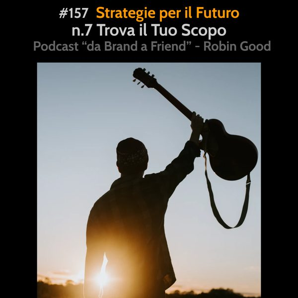

Strategie per il Futuro: #7 Trova il Tuo Scopo

*Strategie per il Futuro: #7 Trova il Tuo Scopo*
Mi fiderei di più di chi sa con certezza dove ha deciso di andare, anche se mi richiederà molto tempo, che di chi, ad alta velocità mi offre un passaggio su un mezzo scintillante che mi porterà molto più rapidamente avanti, ma non potendo stabilire bene dove.
I motivi fondamentali per cui ritengo indispensabile prendere in serissima considerazione l'analizzare e l'identificare il proprio scopo, la propria missione su questo pianeta, sono questi:
1) La direzione da' velocità.
Più chiara hai la tua direzione, più velocemente potrai viaggiare. Più chiara è la tua direzione e il perché è quella e non un altra, e più rapidamente potrai raggiungere gli obiettivi che insegui. Quando non hai una direzione chiara e aggiornata, sono gli eventi e le persone intorno a te a determinare la velocità e l'efficacia del tuo cammino.
2) Avere uno scopo preciso da' energia.
Il perché fai quello che fai, lo scopo per cui hai deciso di intraprendere un certo cammino e non un altro, è il motore che fa muovere tutto.
3) I soldi sono una conseguenza.
Quando scavi, esplori e fai tornare alla luce la tua vera strada, quella per cui il tuo cuore batte e per cui ti emozioni ogni volta che la affronti, i soldi cambiano valore. Non rappresentano più una meta da conquistare, ma diventano un metro di misura della propria effettiva capacità di poter offrire reale valore ad altri. Se non vendi, se non guadagni abbastanza, se cerchi come aumentare il fatturato, non guardare per prima cosa a tattiche, prezzi e scorciatoie. Guarda a come aumentare il valore percepito di quello che offri, facendo emergere lentamente ma in maniera chiara cosa ti motiva nel profondo a farlo.
4) La felicità è una conseguenza.
Quando raggiungi le tappe e i risultati che ti sei preposto, quando riesci ad esprimere ciò che senti dentro al 110%, quando riesci a capire cosa sei venuto a fare su questo pianeta e coltivi questa tua missione in maniera totale, appassionata, profonda, allora, per quello che ho visto e provato nella mia vita, si è veramente felici. Inseguire la felicità non porta da nessuna parte. Capire il proprio scopo e agire per realizzarlo sono gli ingredienti ideali per raggiungerla.
5) Le distrazioni sono il tuo nemico.
In un epoca nella quale le distrazioni sono dietro ad ogni angolo, e dove la maggior parte delle persone ha perso la capacità di sapersi concentrare a lungo su qualcosa, l'avere chiaro e a fuoco
il proprio scopo offre una corazza potentissima per non cedere un millimetro a questo nemico.
6) Dai un senso a ciò che fai.
Lavorare solo per guadagnare è il mestiere più miserabile che esiste. Lavorare per creare, aiutare altri e per trasformare il mondo che ci circonda, avendo uno scopo preciso, è un qualcosa che non solo ci riempie di vita e di soddisfazione, ma che da' vita alla nascita e crescita di altre iniziative.
7) Lascia un segno.
Mi piace pensare che ognuno di noi ha il dovere e il piacere di lasciare qualcosa di tangibile del suo percorso di vita su questo pianeta che crei ricchezza, benessere e armonia per altri. Lo scopo aiuta a illuminare gli spazi e i momenti dove poter lasciare questi segni del nostro passaggio.
8) Ispira gli altri.
Chi ha uno scopo e una missione chiara nella sua vita emana un'energia e una forza particolare, spesso in grado di ispirare e muovere altri nella stessa direzione. Oggi più che mai abbiamo bisogno di essere ispirati identificando e studiando persone e atteggiamenti che ci guidino là dove vogliamo arrivare.
9) Tutti abbiamo uno scopo. Ma dobbiamo scavare per scoprirlo.
Io credo che il nostro DNA faccia parte di un programma più grande, che ha lo scopo di creare vita e di utilizzarla per scoprire e apprendere ciò che ancora non conosciamo. Il grande gioco della vita per me alla fine gira tutto intorno a questa giostra infinita. Creare vita, condividere, apprendere, crescere e seminare nuova vita che continui in questo percorso. Ognuno di noi è un piccolo ma importante pezzo di questo grandissimo puzzle, e la prima e più importante sfida che ognuno di noi ha da risolvere è il capire il prima possibile dove è il nostro posto al suo interno.
10) Le persone comprano il tuo perché. Non il tuo prodotto.
Così come illustra e spiega in maniera eccellente Simon Sinek nel suo libro "Start with Why", le persone non comprano da te il prodotto o il servizio che hai creato, ma il TUO perché dietro a quei prodotti/servizi.
https://www.amazon.it/Start-Why-Leaders-Inspire-Everyone/dp/1591846447
-------------
Info Utili
• Musica di questa puntata:
"Backhome" by Moose Dawa - disponibile su Bandcamp:
https://www.unminus.com/search/hangtime
• Dammi feedback:
critiche, commenti, suggerimenti, idee e domande unendoti al gruppo Telegram https://t.me/@RobinGoodPodcastFeedback
• Ascolta e condividi questo podcast:
https://gopod.me/RobinGood
• Diventa sostenitore:
sostieni il lavoro di Robin Good e tutti i contenuti e risorse utili che condivide costantemente
https://robingood.com/patreon-sharewood-community-campus
https://Patreon.com/Robin_Good
• Seguimi su Telegram:
https://t.me/RobinGoodItalia
(tutti i miei contenuti, immagini, audio e video in un solo canale)
oppure
https://facebook.com/RobinGoodItalia/
(Pagina Facebook ufficiale)
• Newsletter:
http://robingood.it/toptools-newsletter
• Per info e richieste:
mailto: Ludovica.Scarfiotti@robingood.it